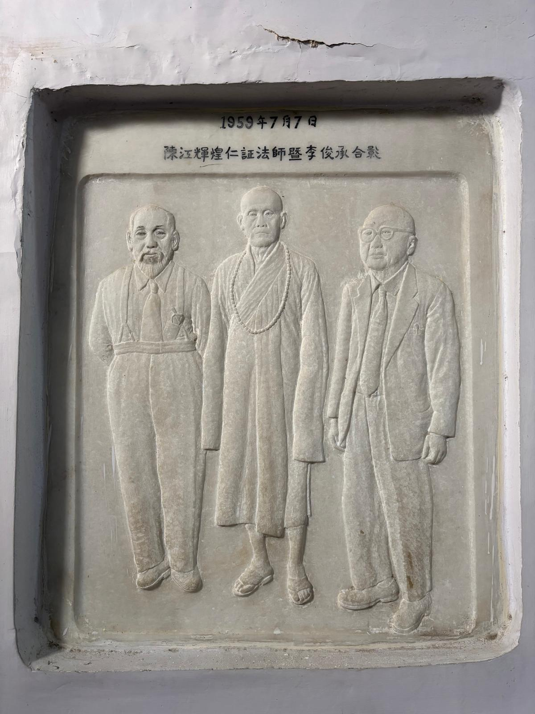

華光寺的出現，並不是一開始就以完整寺院的形式建立起來，而是由一位遠赴佛陀聖地的僧人，在修行與朝聖的親身經驗中，逐漸發願、逐步實現的結果。
仁證法師抵達舍衛城祇樹給孤獨園後，深受聖地清淨氛圍所感，最初生起的念頭，是在當地結一茅蓬，作為安住修行之所，同時也能供往來僧人掛單停留。這個最初的想法十分樸實：不是先想建造規模宏大的寺院，而是希望在佛陀聖地，先有一個可以安住修行與接引同道的地方。
隨著在當地安住的時間漸久，仁證法師逐漸看見更深一層的需要。對遠道而來的華人僧俗而言，舍衛城雖是佛陀重要聖地，卻缺乏一處能依漢傳佛教傳統禮佛、修行與住宿的地方。於是，原本的結廬之念，逐漸轉化為正式建寺的願心。

在當時的印度，要完成這件事並不容易。仁證法師身處異地，面對的是人地生疏、語言隔閡與資源有限的現實。但也正是在這樣的處境中，法師的願心得到各方響應。當時有在緬甸與印度弘法的華籍僧人得知後，相與贊助，使法師得以購地興工，逐步完成最初的建寺心願。寺院初步建成後，法師將其命名為「華光」，寓意中華僧俗同沐佛陀慈光。
從相關資料來看，華光寺的籌建並非短時間內一次完成，而是分階段推進的。早期便已有對外募捐與勸募記錄，顯示建寺工程從初發願到真正落實，需要長時間的籌資、聯繫與建設。這也說明，華光寺從一開始就不是單靠一人力量所能成就，而是逐漸形成一個獲得各方支持的佛教建設事業。
然而，寺院建成之後曾遭遇火災，幾乎使多年經營毀於一旦。面對這樣的打擊，仁證法師並未放棄，而是在課誦與禪修之餘，再次發願重建。這段歷程，是華光寺歷史中極為關鍵的一頁，也顯示這座寺院的成立，並不是順利平穩地完成，而是經歷了真實的考驗與挫折。

重建過程中，地方官員、四眾弟子與各地護法共同施財協助。此外，仁證法師也曾赴新加坡等地募化，向華人佛教界與僑界說明舍衛城建寺因緣，請求十方善信共襄盛舉。新加坡、馬來亞、菲律賓等地善信的支持，最終使重建工程得以完成。
重建後的華光寺，不只是單一建物，而是包括大雄寶殿、附屬殿堂及相關設施的寺院群。寺院可供華人佛教徒依照漢傳佛教傳統禮佛、修行與住宿，因此也被稱為「舍衛城中華寺」。若從整體歷程來看，華光寺的籌建可以說歷經了發願、建設、焚毀、重建等重要階段，是一座由願心、苦行、募化與跨地域護持共同成就的道場。

因此，華光寺的籌建過程，本身就是它歷史意義的一部分。它不只是寺院建築完成的過程，更是一段由法師願心、十方護持與不退轉精神共同交織而成的歷史。